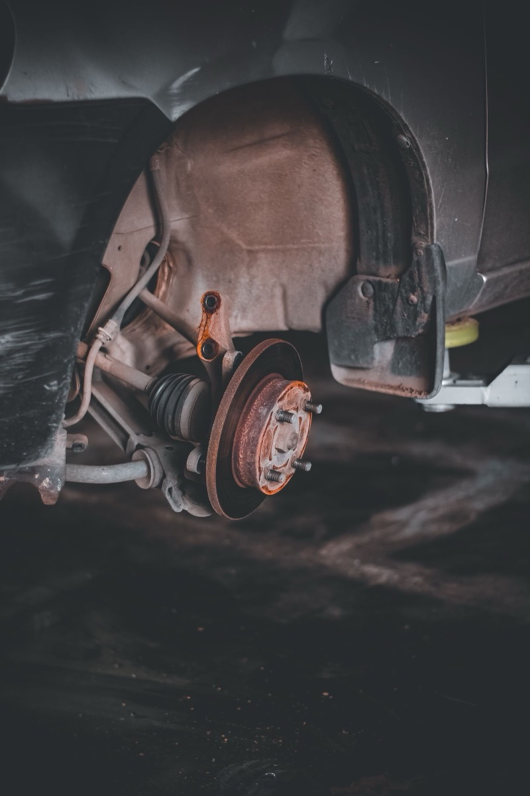
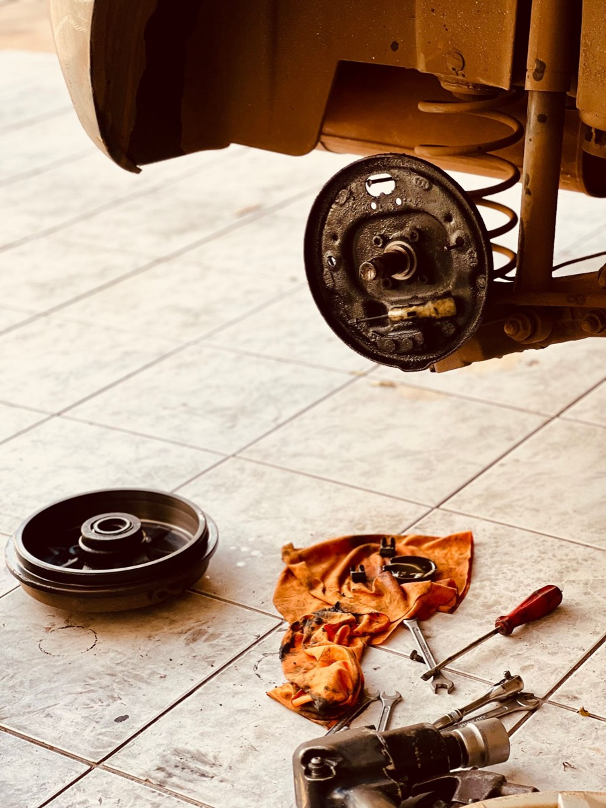
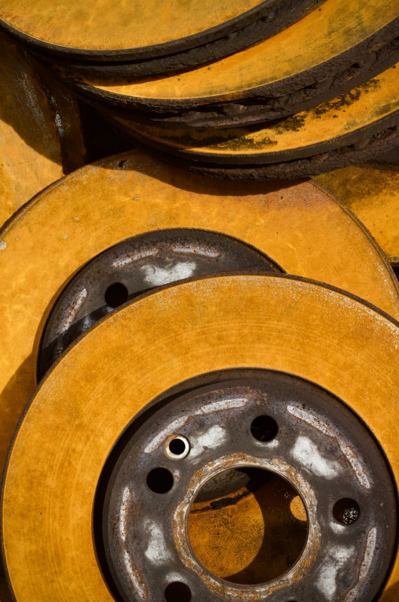
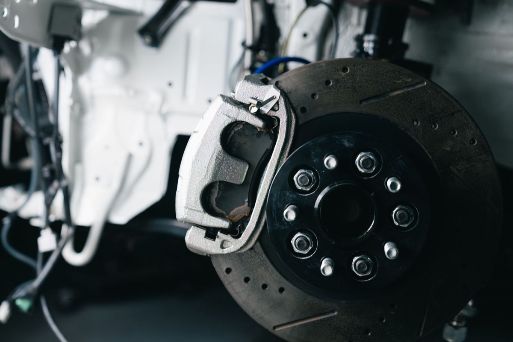
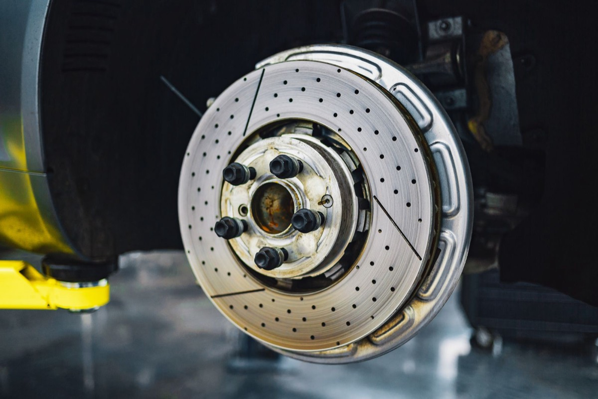

The Stuck Brake Rotor: What Actually Frees It, and What the Bolt Costs
A rotor rusts itself onto the hub, and the part that stops it coming off is usually not the part anyone films. The screws, the hub face and the rotor hat are what actually hold it — and one of them costs $9.99 while carrying more reviews than every rotor in this guide combined. Everything below was
The $9.99 ACDelco rotor retaining bolt carries 55 reviews — more than any rotor in this guide and more than any part in the whole brake cluster. The cheapest part on the job is the one people buy most often, and it is the one that decides whether the rotor comes off freely.
A rotor is held on by clamping force from the wheel, not by the little screw. The screw only locates the holes — which is why a rotor still spins free once the caliper is off, and why a seized screw can be drilled out without the wheel falling off.

A rotor rusts itself onto the hub, and the part that stops it coming off is usually not the part anyone films. The screws, the hub face and the rotor hat are what actually hold it — and one of them costs $9.99 while carrying more reviews than every rotor in this guide combined.
Everything below was priced live on 18 November 2026, after the demand was checked: the stuck-rotor videos run to 550K, 538K and 366K views, the stripped-screw videos to 2.4 million and 515K, and “Most Common Brake Installation Mistakes” to 5.7 million. This is not a niche problem.
What is actually holding the rotor on
Three things, and only one of them is a fastener.
The wheel clamps the rotor to the hub. That is the real retention — the lugnuts pull the wheel face against the rotor hat and the friction between those surfaces is what resists rotation. Once the wheel is off, that force is gone.
The retaining screw locates the rotor so the wheel holes line up. It carries almost no load in service. It exists so the rotor does not fall off on the assembly line and does not rotate out of alignment while you fit a wheel.
The hub face is where the problem lives. Two bare steel surfaces, exposed to spray, held together for years, rust into one piece. That rust is what welds a rotor to a hub, and no amount of hitting the friction surface addresses it.
That distinction is the whole diagnosis. A rotor that will not come off is almost never held by the screw. It is held by rust at the hub interface, and the screw is just the first thing in the way.

The screw is the first obstacle, not the cause
The retaining screw is a small cross-head or Torx fastener, and on a truck that has seen winters it is often already rounded before anyone touches it. There are two legitimate ways to deal with it and one that ruins a hub.
| Approach | What it costs | When it is right |
|---|---|---|
| Impact driver, axial load | The tool you already own | Screw head is intact |
| Drill the head off | One drill bit | Head is rounded, rotor is being replaced |
| Heat and extractor | A torch and a set | Last resort, and only on the screw |
Drilling the head off is not a failure. The screw holds nothing once the wheel is on. A rotor that is being replaced does not need its screw to survive, and a drilled screw leaves the threaded stub in the hub, which comes out easily once the rotor is off and there is nothing clamping it. The videos that show this — the 2.4-million-view one in particular — are not teaching a trick. They are teaching that the screw is expendable.
The mistake worth naming is attacking the screw with a hammer and a punch while the rotor is still on. That deforms the rotor hat, and if you are reusing the rotor, you have just made a new problem.

Getting it off once the screw is out
With the caliper bracket off and the screw gone, the rotor is held only by rust at the hub face. The sequence that works:
1. Penetrating oil at the hub interface, not the wheel face. The joint is between the rotor hat and the hub flange, on the inboard side. Spraying the braking surface does nothing.
2. Thread a bolt into the removal hole if the rotor has one. Many truck rotors are drilled with two small threaded jacking holes between the studs. Two bolts driven evenly push the rotor off the hub with no impact at all. Check for these before anything else — a rotor that has them does not need to be hit.
3. Strike the hat, not the friction ring. A dead-blow against the flat of the hat around the stud circle breaks the rust bond. Hitting the friction surface warps it.
4. If it still will not move, go back to the interface. A chisel between the rotor hat and the hub flange, working around the stud circle, separates the two surfaces. This is where most stuck rotors finally give.
What is not on that list is heating the rotor until it glows. That is how a hub bearing gets destroyed on a truck that is supposed to drive home.

The parts, priced
Four rotors across the GM truck range, spanning $50.99 to $215.99, all read on 18 November 2026. Read the fitment column before the price — two of these are front rotors sold each, and two are rear rotors sold in pairs, so the prices are not measuring the same thing.
| Rotor | Fitment | Price | Reviews |
|---|---|---|---|
| Bendix Global | front, 12.00 in., 6 x 5.50 in., each | $50.99 | 19 |
| Brembo Prime UV Coated | 13.58 in., Cadillac, each | $90.99 | 7 |
| Summit Extreme Performance coated | rear, 13 in., Cadillac/Chevy/GMC, pair | $169.98 | 0 |
| PowerStop Evolution drilled/slotted | rear, 13 in., Cadillac/Chevy/GMC, pair | $215.99 | 0 |
The Bendix is the value outlier at $50.99 with 19 reviews and it is sold each, not as a pair — which is the detail that makes the comparison honest. Two of them is $101.98 for a front axle. The PowerStop and Summit listings are pairs, so their prices are already for both sides — and both are rear rotors, which is why the pair price is higher than two front rotors.
Bendix Global rotor, front, 12.00 in. → $50.99 · 19 reviews · checked 18 Nov 2026
Brembo Prime UV coated rotor → $90.99 · 7 reviews · checked 18 Nov 2026

The $9.99 part with 55 reviews
Here is the number that reframes the whole job. The ACDelco GM Genuine rotor retaining bolt is $9.99 and carries 55 reviews — more than every rotor on this page added together. It is a Torx T30, M8 x 1.25, counter-sunk bolt, and the review count tells you how often people need one: they break, round, or get lost, and the replacement is a nine-dollar part nobody thinks about until the rotor will not come off.
ACDelco rotor retaining bolt, T30, M8 x 1.25 → $9.99 · 55 reviews · checked 18 Nov 2026
Buy it before you start, not after. If the screw comes out intact, you have a spare. If it does not, you are not making a second trip with the truck on stands.
The caution on this part is fitment. The Dorman 13824 is also sold as a rotor retaining screw, at $4.99 for a set of eight, and its description says it is for Acura and Honda — 6mm x 1.0 thread. It is not a GM part and it will not thread into a GM hub. Same category, same shelf, wrong car.
Pads, since the caliper is already off
The caliper bracket has to come off to get the rotor, so the pads are exposed whether or not you planned to change them. Two pads that are sold for a GM front end, though not the same one:
| Pads | Fitment | Price | Reviews |
|---|---|---|---|
| Brembo Prime Ceramic | Cadillac, ceramic, shims included | $75.99 | 1 |
| PowerStop Z36 Truck and Tow | Chevrolet/GMC, carbon fiber ceramic, hardware | $108.99 | 4 |
PowerStop Z36 Truck and Tow pads → $108.99 · 4 reviews · checked 18 Nov 2026
The Z36 is the one to pick for a Chevrolet or GMC truck that tows or carries load — it is sold as a truck and tow compound with the hardware in the box, and the $33 premium over the Brembo buys a pad specified for heat that a ceramic street pad is not. The Brembo listing is a Cadillac application, so check the fitment line before assuming it crosses over to a truck.
What this actually costs
A front axle done properly, with both rotors replaced:
- Two Bendix rotors: $101.98
- One pair of Z36 pads: $108.99
- Two retaining bolts, if yours do not survive: $19.98
That is $230.95 in parts for one axle, and the two bolts are the $19.98 that turns a two-hour job into a single trip. If the pads are still good and the rotors are just rusted on, the job is $121.96 and an afternoon.
The expensive version of this job is not the parts. It is a destroyed hub bearing or a warped rotor from hitting the wrong surface, and both of those cost more than the entire parts list.
Is any of this legal in California?
Rotors, pads and retaining bolts are replacement service parts, and none of them changes the emissions equipment on the vehicle. There is no CARB Executive Order question here in the way there is with an intake or a tune.
What California does regulate is brake friction material content, under the state’s copper limitation for brake pads sold in the state. Both pads here are sold by a national retailer for road use and neither listing carries any restriction language — but if you are buying for a California-registered vehicle and the listing does not state the friction material compliance, that is the question to ask the seller, not one this page can answer for you.
CarModReview may earn a commission from purchases made through links on this page, at no extra cost to you.
Topics
- Brakes
- PowerStop